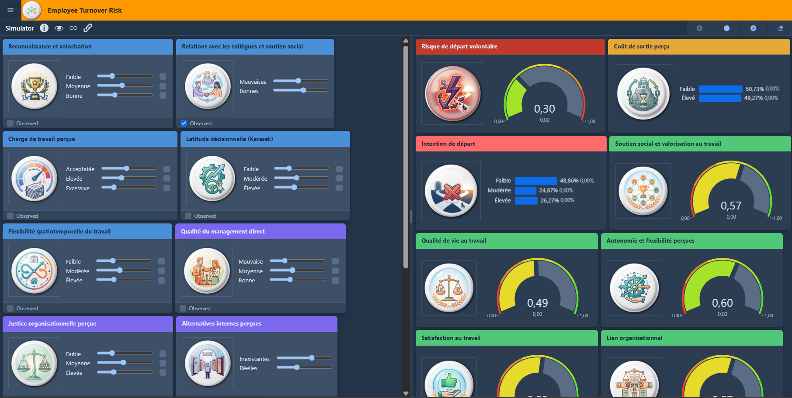

Le problème : un départ n'a presque jamais une seule cause
Les analyses RH classiques cherchent souvent « la » raison d'un départ. Mais la plupart des enquêtes de satisfaction mesurent chaque dimension séparément — la rémunération d'un côté, le management de l'autre, l'engagement encore ailleurs — et ratent précisément ce qui déclenche la décision : la façon dont ces dimensions se combinent.
Une charge élevée ne fait pas partir si la reconnaissance compense. Une rémunération dans la moyenne ne pose pas problème tant qu'aucune alternative crédible n'apparaît. À l'inverse, un ensemble de signaux modérés — un peu moins d'autonomie, un management qui se dégrade, un événement personnel — peut suffire à faire basculer une intention en décision. Le turnover est un phénomène de système, pas de facteur isolé.
On ne prédit pas un départ en regardant la variable la plus visible, mais en regardant comment plusieurs facteurs, chacun modéré, s'alignent — et un réseau bayésien est fait pour raisonner exactement là-dessus.
Le modèle : une structure causale rendue explicite
Le modèle représente les facteurs du turnover volontaire et les hypothèses d'influence qui les relient, sous forme d'un graphe orienté. Chaque nœud est un facteur — reconnaissance et valorisation, charge de travail perçue, latitude décisionnelle, qualité du management direct, justice organisationnelle, rémunération relative au marché, alternatives internes, employabilité perçue, ancienneté, événement-choc déclencheur… Chaque flèche est une hypothèse d'influence, extraite de la littérature et discutée avec vos équipes.
Ces facteurs alimentent des variables intermédiaires — satisfaction au travail, qualité de vie au travail, lien organisationnel, coût de sortie perçu, intention de départ — qui convergent vers l'indicateur de sortie : le risque de départ volontaire. C'est la transparence de cette chaîne qui fait la valeur du modèle : chaque relation est justifiable, et chaque levier d'action est identifiable sur le graphe.

Les nœuds sont les facteurs. Ceux de gauche sont ceux sur lesquels on peut agir ou qu'on observe (charge, reconnaissance, autonomie…) ; ceux de droite sont les résultats qui vous intéressent (intention de départ, risque de départ volontaire).
Les flèches se lisent « A influence B ». Une flèche n'est pas une preuve de causalité expérimentale : c'est une hypothèse d'influence jugée plausible d'après la littérature ou les données, et assumée comme telle.
Les chemins comptent autant que les nœuds. Un facteur peut peser fortement de façon indirecte — en passant par la satisfaction ou le lien organisationnel — même si son lien direct avec le départ paraît faible. C'est précisément ce qu'une liste de corrélations ne montre jamais.
Le simulateur : tester un levier, voir tout le réseau réagir
Une fois le modèle calibré, il devient interactif via le WebSimulator. À gauche, vous ajustez les facteurs (curseurs par niveau : faible / moyen / élevé). À droite, chaque indicateur — risque de départ, coût de sortie perçu, qualité de vie au travail, satisfaction — se recalcule instantanément et affiche une probabilité, pas un score figé.

Les curseurs de gauche fixent l'état d'un facteur. Les modifier revient à poser une question : « si l'autonomie passait de faible à élevée, toutes choses égales par ailleurs, que deviendrait le risque ? »
Les jauges de droite affichent une probabilité entre 0 et 1. On ne lit pas une valeur absolue comme une vérité : on lit un écart entre deux scénarios comparés sur la même base.
Cela permet de hiérarchiser les leviers accessibles : le facteur le plus corrélé au départ n'est pas toujours le plus actionnable, et un levier moins spectaculaire mais atteignable peut, cumulé à un autre, produire plus d'effet.
Ce que le modèle permet de faire
- Comparer deux équipes sur l'ensemble des facteurs et classer ceux qui expliquent le mieux un écart de turnover observé.
- Comparer des plans d'action à budget équivalent : le modèle montre lequel déplace le plus le risque, sur une même base chiffrée.
- Distinguer le direct de l'indirect : repérer les facteurs qui pèsent surtout par leurs chemins, invisibles à une lecture par corrélations.
- Rendre l'arbitrage partageable : une restitution qui explicite les hypothèses, pour un CODIR ou un CSE.
Explorer ce modèle
Le graphe et le simulateur ci-dessous sont des versions de démonstration, construites sur la littérature et des données fictives. Votre modèle serait calibré sur votre contexte.
Fondements
La structure du modèle s'appuie sur des cadres de recherche publiés, dont :
- Rubenstein et al. (2018) — méta-analyse des antécédents du turnover volontaire, Personnel Psychology.
- Mobley (1977) — modèle séquentiel de la décision de départ (de l'insatisfaction à l'intention puis au départ).
- Mitchell et al. (2001) — théorie de l'encastrement professionnel (job embeddedness), Academy of Management Journal.
La page Méthode détaille comment la littérature est traduite en structure de réseau, calibrée, puis simulée — et ce qu'un modèle ne fait pas.